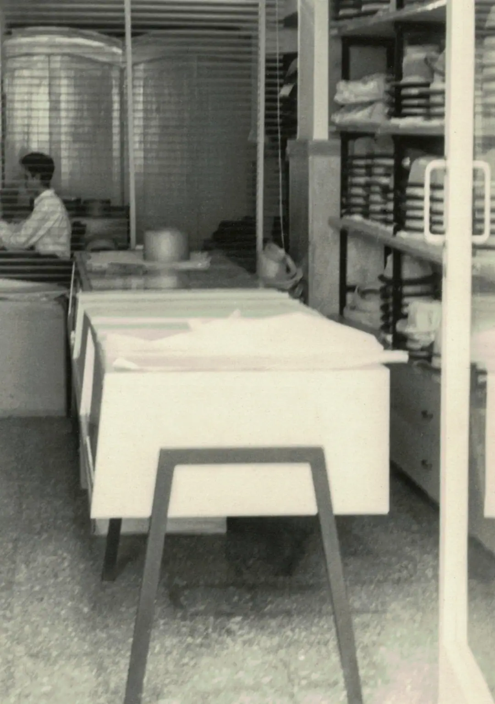
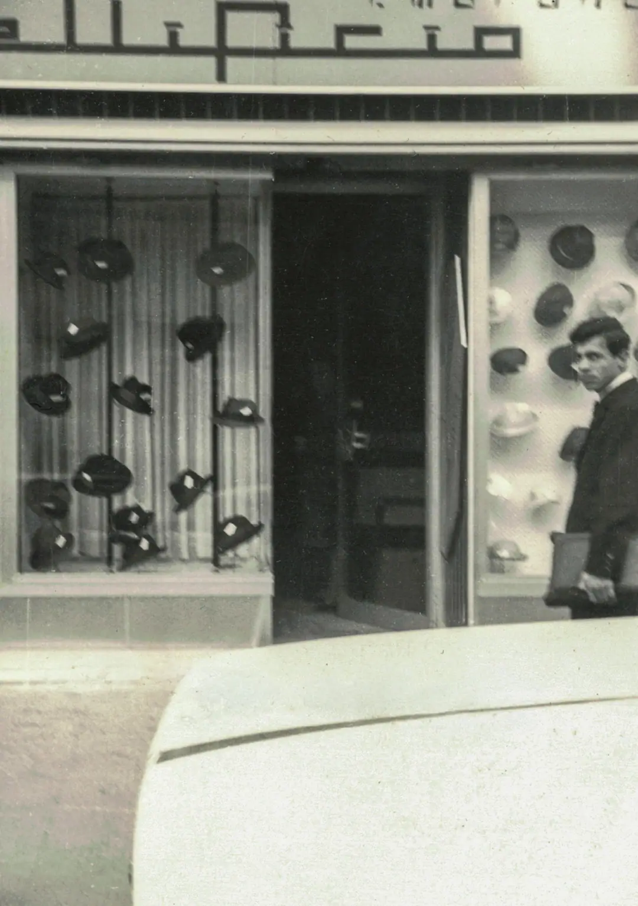
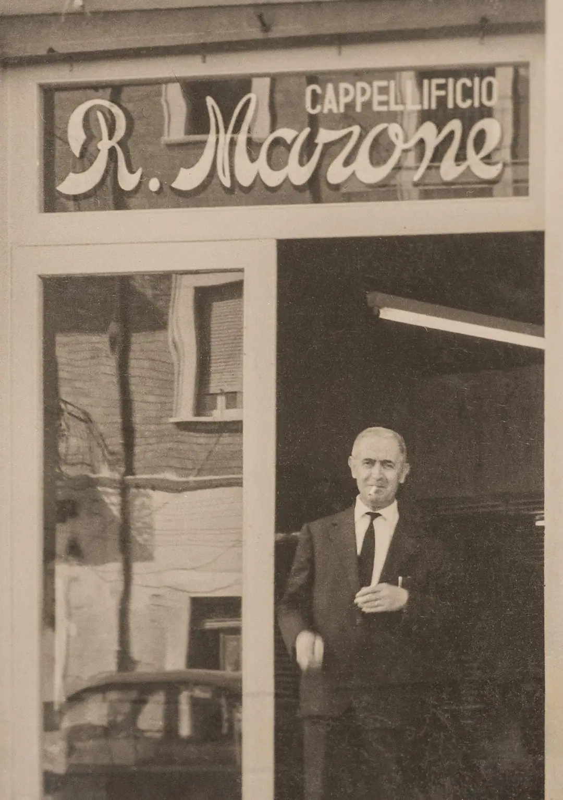

SCOPRI IL MONDO MARONE

Brand
ALTA MANIFATTURA IN PUGLIA
Marone Hats nasce da una storia italiana di manifattura, visione e continuità.
Una storia che inizia nel 1881, quando Rocco Marone avvia una piccola produzione di cappelli fatti a mano in un piccolo borgo del Sud Italia. Da quel gesto iniziale prende forma un percorso imprenditoriale e umano che attraversa generazioni, territori e linguaggi del vestire, mantenendo intatto il valore più importante: il rispetto per il lavoro ben fatto. Nel tempo, l'azienda cresce insieme alla famiglia Marone, trasformando l'esperienza artigianale in una cultura di prodotto riconoscibile. Dopo una lunga fase di sviluppo tra Laurenzana e Bitetto, il marchio consolida la propria identità a Foggia, dove prende forma un nuovo approccio alla produzione: più ampia, più strutturata, ma sempre radicata in una sensibilità laboratoriale autentica. La nascita del primo negozio a Foggia, nel 1960, rappresenta un momento chiave di questa evoluzione.
La sua essenza è il risultato di un equilibrio prezioso tra memoria e futuro.
Ogni collezione nasce da una ricerca continua su forme, volumi, vestibilità e materiali. La scelta dei tessuti, la qualità delle finiture e la precisione della costruzione non sono dettagli minori, ma il centro stesso del progetto. È in questa attenzione, assolutamente sartoriale, che si riconosce l'identità del brand: un'estetica essenziale ma ricca di carattere, capace di interpretare la tradizione italiana senza trasformarla in nostalgia. Dietro ogni cappello c'è un processo fatto di competenze reali, gesti ripetuti con precisione, esperienza tecnica e sensibilità manuale. La lavorazione conserva un'anima artigianale, ma dialoga con strumenti e processi evoluti per garantire continuità, qualità e affidabilità operativa. Questa combinazione permette di mantenere standard elevati, valorizzando la dimensione umana della cappelleria e, allo stesso tempo, una strutturazione produttiva solida e innovativa.
Il cappello, per Marone, non è un accessorio secondario. È una forma di linguaggio.
È il punto in cui funzione, proporzione e stile si incontrano. È un oggetto che definisce una presenza, completa una silhouette, suggerisce un'attitudine. Per questo ogni modello viene sviluppato con particolare attenzione all'equilibrio tra comfort, linea e personalità, affinché il prodotto possa dialogare con chi lo indossa in modo naturale, senza eccessi, ma con una riconoscibilità immediata. Nel corso del tempo, il brand ha costruito una reputazione internazionale grazie a una visione coerente e a una proposta capace di unire la qualità del fatto a mano, il gusto italiano e l'aggiornamento stilistico. Oggi i cappelli Marone sono presenti in mercati esteri selezionati e in boutique specializzate, confermando la forza di un'identità che non rincorre il rumore del momento, ma cresce attraverso la credibilità del prodotto, la continuità del lavoro e la cura delle relazioni commerciali.
Nel 2026 l'impresa continua a evolvere con lo stesso spirito con cui è nata.
Custodire il sapere originario, reinterpretarlo con intelligenza, e trasformarlo in collezioni che parlano al presente. In un settore in cui autenticità e qualità fanno la differenza, Marone Hats afferma il suo sguardo identitario nella cappelleria Made in Italy: colta, concreta, ricercata. Una manifattura che non rinuncia alla propria origine artigianale e che nel contempo si proietta avanti con ambizione, disciplina e sensibilità contemporanea.


